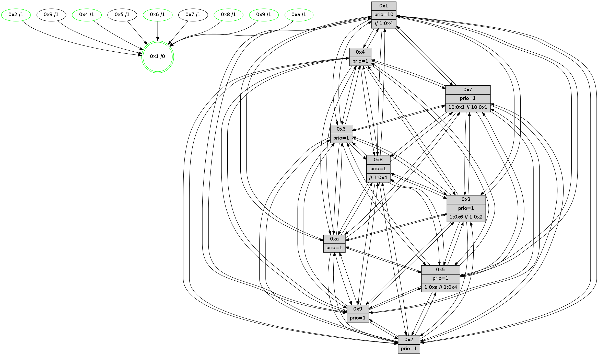

>> << IDX [start] -100 -25 -5 +0 +5 +25 +100 [635.662162066]
 Previous packets
----------------------------------------------------------------------
630.145251 beacon01(faad) #0 coord=01,02,03,04,05,06,07,0a,09,08 cycle=688.0ms assoc
-- color-indic=1 64 c5 fd
630.155233 beacon02(faad) #0 coord=01,02,03,04,05,06,07,0a,09,08 cycle=688.0ms assoc 64 56 cc
630.165232 beacon03(faad) #0 coord=01,02,03,04,05,06,07,0a,09,08 cycle=688.0ms assoc 64 2c 81
630.175234 beacon04(faad) #0 coord=01,02,03,04,05,06,07,0a,09,08 cycle=688.0ms assoc 64 5b 6b
630.185234 beacon05(faad) #0 coord=01,02,03,04,05,06,07,0a,09,08 cycle=688.0ms assoc 64 21 26
630.195234 beacon06(faad) #0 coord=01,02,03,04,05,06,07,0a,09,08 cycle=688.0ms assoc 64 af f1
630.205234 beacon07(faad) #0 coord=01,02,03,04,05,06,07,0a,09,08 cycle=688.0ms assoc 64 d5 bc
630.215238 beacon0a(faad) #0 coord=01,02,03,04,05,06,07,0a,09,08 cycle=688.0ms assoc 64 a4 b7
630.225239 beacon09(faad) #0 coord=01,02,03,04,05,06,07,0a,09,08 cycle=688.0ms assoc 64 2a 60
630.235238 beacon08(faad) #0 coord=01,02,03,04,05,06,07,0a,09,08 cycle=688.0ms assoc 64 50 2d
630.247049 [Hello(5): seq=405 sym=7,6,4,3,1,9,8,10,2 sysInfo= stat=7:5,8,1,3/6:8,5,1,5/4:1,8,12,5/3:12,14,10,3/1:12,15,9,1/9:11,9,15,3/8:10,1,9,4/10:12,0,15,5/2:7,15,13,4]
630.249774 [Hello(9): seq=348 sym=5,2,3,4,7,6,8,10,1 sysInfo=hasWarning stat=5:15,6,12,7/2:8,9,0,5/3:15,10,11,5/4:3,7,12,5/7:12,13,2,2/6:4,3,14,5/8:8,1,2,2/10:12,12,14,7/1:7,13,13,1]
630.252485 [Hello(10): seq=337 sym=6,2,3,8,9,5,7,4,1 sysInfo= stat=6:3,10,2,1/2:15,0,5,1/3:8,1,6,2/8:7,14,14,6/9:6,5,11,4/5:10,5,10,6/7:12,11,14,2/4:5,9,9,6/1:15,9,10,1]
630.255332 [Color(1) seq=85 @0:0 prio=10 >1.@a >>1.@4,1.@6,1.@7]
630.257273 [Hello(8): seq=348 sym=5,2,3,4,7,6,9,10,1 sysInfo=hasWarning,coloring-mode-on,ColoringModeIndicationCalled stat=5:0,3,13,5/2:1,2,4,1/3:6,2,13,7/4:10,9,0,6/7:2,10,1,4/6:13,9,13,6/9:6,4,1,5/10:4,14,12,6/1:2,0,13,0]
630.260437 [Hello(2): seq=401 sym=4,5,7,6,3,9,8,10,1 sysInfo=hasWarning stat=4:12,14,14,4/5:5,7,10,5/7:12,2,2,3/6:1,10,15,4/3:3,13,10,1/9:14,5,11,1/8:3,10,9,4/10:0,6,11,4/1:10,10,5,1]
630.263889 [Color(2) seq=50 @0:0 prio=1]
630.265845 [Color(4) seq=48 @0:0 prio=1]
630.268980 [Color(9) seq=53 @0:0 prio=1]
630.274951 [Color(6) seq=74 @0:0 prio=1]
----------------------------------------------------------------------
630.933380 beacon01(faad) #0 coord=01,02,03,04,05,06,07,0a,09,08 cycle=688.0ms assoc
-- color-indic=1 64 01 f3
630.943363 beacon02(faad) #0 coord=01,02,03,04,05,06,07,0a,09,08 cycle=688.0ms assoc 64 92 c2
630.953362 beacon03(faad) #0 coord=01,02,03,04,05,06,07,0a,09,08 cycle=688.0ms assoc 64 e8 8f
630.963363 beacon04(faad) #0 coord=01,02,03,04,05,06,07,0a,09,08 cycle=688.0ms assoc 64 9f 65
630.973364 beacon05(faad) #0 coord=01,02,03,04,05,06,07,0a,09,08 cycle=688.0ms assoc 64 e5 28
630.983362 beacon06(faad) #0 coord=01,02,03,04,05,06,07,0a,09,08 cycle=688.0ms assoc 64 6b ff
630.993365 beacon07(faad) #0 coord=01,02,03,04,05,06,07,0a,09,08 cycle=688.0ms assoc 64 11 b2
631.003369 beacon0a(faad) #0 coord=01,02,03,04,05,06,07,0a,09,08 cycle=688.0ms assoc 64 60 b9
631.013369 beacon09(faad) #0 coord=01,02,03,04,05,06,07,0a,09,08 cycle=688.0ms assoc 64 ee 6e
631.023369 beacon08(faad) #0 coord=01,02,03,04,05,06,07,0a,09,08 cycle=688.0ms assoc 64 94 23
631.034531 [Hello(7): seq=405 sym=2,3,5,6,4,8,9,10,1 sysInfo=hasWarning stat=2:13,14,4,9/3:7,3,3,7/5:14,11,0,9/6:9,6,2,1/4:7,0,2,6/8:7,0,4,4/9:4,14,2,8/10:15,5,2,7/1:1,7,12,1]
631.037624 [Hello(1): seq=314 sym=2,9,5,10,3,8,6,7 sysInfo=coloring-mode-on,ColoringModeRequestCalled stat=2:9,11,3,8/9:6,1,2,0/5:4,15,4,8/10:3,14,5,7/3:9,6,11,8/8:14,8,9,6/6:5,14,6,5/7:11,5,10,7]
631.040799 [Hello(4): seq=405 sym=5,7,6,2,3,9,8,10,1 sysInfo= stat=5:2,11,12,6/7:1,4,1,2/6:7,11,1,6/2:14,9,12,6/3:5,11,9,3/9:6,14,13,3/8:13,5,15,7/10:5,2,15,6/1:12,10,12,1]
631.044472 [Color(10) seq=63 @0:0 prio=1]
631.047257 [Hello(3): seq=405 sym=1,7,6,2,4,8,9,10,5 sysInfo= stat=1:15,4,13,1/7:8,0,14,3/6:1,4,11,6/2:10,10,13,7/4:0,8,13,4/8:3,14,11,2/9:7,6,1,6/10:6,7,11,5/5:6,3,14,5]
631.049748 [Color(8) seq=85 @0:0 prio=1 >>1.@4,1.@6,1.@7]
631.052603 [Hello(6): seq=405 sym=2,3,5,4,7,9,8,10,1 sysInfo= stat=2:4,3,6,6/3:12,5,2,5/5:0,10,15,7/4:8,5,0,7/7:4,1,2,0/9:9,2,2,6/8:14,7,0,5/10:1,7,4,6/1:0,10,9,1]
----------------------------------------------------------------------
631.721511 beacon01(faad) #0 coord=01,02,03,04,05,06,07,0a,09,08 cycle=688.0ms assoc
-- color-indic=1 64 bd f6
631.731494 beacon02(faad) #0 coord=01,02,03,04,05,06,07,0a,09,08 cycle=688.0ms assoc 64 2e c7
631.741494 beacon03(faad) #0 coord=01,02,03,04,05,06,07,0a,09,08 cycle=688.0ms assoc 64 54 8a
631.751493 beacon04(faad) #0 coord=01,02,03,04,05,06,07,0a,09,08 cycle=688.0ms assoc 64 23 60
631.761492 beacon05(faad) #0 coord=01,02,03,04,05,06,07,0a,09,08 cycle=688.0ms assoc 64 59 2d
631.771494 beacon06(faad) #0 coord=01,02,03,04,05,06,07,0a,09,08 cycle=688.0ms assoc 64 d7 fa
631.781495 beacon07(faad) #0 coord=01,02,03,04,05,06,07,0a,09,08 cycle=688.0ms assoc 64 ad b7
631.791499 beacon0a(faad) #0 coord=01,02,03,04,05,06,07,0a,09,08 cycle=688.0ms assoc 64 dc bc
631.801499 beacon09(faad) #0 coord=01,02,03,04,05,06,07,0a,09,08 cycle=688.0ms assoc 64 52 6b
631.811500 beacon08(faad) #0 coord=01,02,03,04,05,06,07,0a,09,08 cycle=688.0ms assoc 64 28 26
631.822716 [Hello(10): seq=338 sym=6,2,3,8,9,5,7,4,1 sysInfo= stat=6:4,11,2,1/2:0,1,5,1/3:9,1,6,2/8:8,15,14,6/9:6,6,11,4/5:10,5,10,6/7:13,11,14,2/4:5,10,9,6/1:15,10,10,1]
631.826434 [Color(6) seq=75 @0:0 prio=1]
631.827930 [Hello(5): seq=406 sym=7,6,4,3,1,9,8,10,2 sysInfo= stat=7:6,8,1,3/6:9,6,1,5/4:2,9,12,5/3:13,14,10,3/1:13,0,9,1/9:12,10,15,3/8:11,2,9,4/10:13,1,15,5/2:8,0,13,4]
631.830678 [Hello(9): seq=349 sym=5,2,3,4,7,6,8,10,1 sysInfo=hasWarning stat=5:0,6,12,7/2:8,9,0,5/3:0,10,11,5/4:4,7,12,5/7:13,13,2,2/6:5,4,14,5/8:8,2,2,2/10:12,13,14,7/1:8,13,13,1]
631.835743 [Color(9) seq=54 @0:0 prio=1]
631.837359 [Hello(2): seq=402 sym=4,5,7,6,3,9,8,10,1 sysInfo=hasWarning stat=4:13,15,14,4/5:6,7,10,5/7:13,2,2,3/6:2,11,15,4/3:4,13,10,1/9:15,6,11,1/8:3,11,9,4/10:0,7,11,4/1:11,10,5,1]
631.839848 [STC(1) #0.45 tree-change,inconsistent-stability,stable,to-color d=0]
631.842218 [Color(4) seq=49 @0:0 prio=1]
631.843730 [Color(1) seq=86 @0:0 prio=10 >>1.@4,1.@6,1.@7]
631.845430 [Color(2) seq=51 @0:0 prio=1]
----------------------------------------------------------------------
632.509642 beacon01(faad) #0 coord=01,02,03,04,05,06,07,0a,09,08 cycle=688.0ms assoc
-- color-indic=1 64 89 ee
632.519625 beacon02(faad) #0 coord=01,02,03,04,05,06,07,0a,09,08 cycle=688.0ms assoc 64 1a df
632.529624 beacon03(faad) #0 coord=01,02,03,04,05,06,07,0a,09,08 cycle=688.0ms assoc 64 60 92
632.539625 beacon04(faad) #0 coord=01,02,03,04,05,06,07,0a,09,08 cycle=688.0ms assoc 64 17 78
632.549626 beacon05(faad) #0 coord=01,02,03,04,05,06,07,0a,09,08 cycle=688.0ms assoc 64 6d 35
632.559625 beacon06(faad) #0 coord=01,02,03,04,05,06,07,0a,09,08 cycle=688.0ms assoc 64 e3 e2
632.569625 beacon07(faad) #0 coord=01,02,03,04,05,06,07,0a,09,08 cycle=688.0ms assoc 64 99 af
632.579631 beacon0a(faad) #0 coord=01,02,03,04,05,06,07,0a,09,08 cycle=688.0ms assoc 64 e8 a4
632.589631 beacon09(faad) #0 coord=01,02,03,04,05,06,07,0a,09,08 cycle=688.0ms assoc 64 66 73
632.599631 beacon08(faad) #0 coord=01,02,03,04,05,06,07,0a,09,08 cycle=688.0ms assoc 64 1c 3e
632.610547 [Hello(1): seq=315 sym=4,2,9,5,10,3,8,6,7 sysInfo=coloring-mode-on,ColoringModeRequestCalled stat=4:0,0,0,0/2:9,12,3,8/9:6,1,2,0/5:4,15,4,8/10:4,15,5,7/3:10,6,11,8/8:14,9,9,6/6:6,14,6,5/7:11,5,10,7]
632.613080 [Hello(4): seq=406 sym=5,7,6,2,3,9,8,10,1 sysInfo= stat=5:2,11,12,6/7:1,4,1,2/6:8,11,1,6/2:14,10,12,6/3:6,11,9,3/9:6,14,13,3/8:13,6,15,7/10:6,3,15,6/1:12,11,12,1]
632.615503 [Hello(3): seq=406 sym=1,7,6,2,4,8,9,10,5 sysInfo= stat=1:15,5,14,1/7:8,0,14,3/6:2,5,11,6/2:11,11,13,7/4:0,9,13,4/8:3,15,11,2/9:8,7,1,6/10:7,7,11,5/5:7,3,14,5]
632.618848 [Hello(6): seq=406 sym=2,3,5,4,7,9,8,10,1 sysInfo= stat=2:5,4,6,6/3:12,5,2,5/5:1,10,15,7/4:8,6,0,7/7:4,1,2,0/9:10,3,2,6/8:14,7,0,5/10:2,7,4,6/1:0,11,10,1]
632.621637 [STC(3)->1 #0.45 tree-change,inconsistent-stability,to-color d=1]
632.623022 [STC(9)->1 #0.45 tree-change,inconsistent-stability,stable,to-color d=1]
632.628515 [STC(6)->1 #0.45 tree-change,inconsistent-stability,stable,to-color d=1]
632.629827 [STC(8)->1 #0.45 tree-change,inconsistent-stability,stable,to-color d=1]
632.631253 [STC(5)->1 #0.45 tree-change,inconsistent-stability,to-color d=1]
632.636049 [STC(10)->1 #0.45 tree-change,inconsistent-stability,stable,to-color d=1]
632.639622 [Color(10) seq=64 @0:0 prio=1]
632.646779 [Hello(7): seq=406 sym=2,3,5,6,4,8,9,10,1 sysInfo=hasWarning stat=2:14,15,4,9/3:8,3,3,7/5:15,11,0,9/6:10,7,2,1/4:8,1,2,6/8:7,1,4,4/9:5,15,2,8/10:0,6,2,7/1:2,8,13,1]
632.651515 [STC(7)->1 #0.45 tree-change,inconsistent-stability,to-color d=1]
----------------------------------------------------------------------
633.297772 beacon01(faad) #0 coord=01,02,03,04,05,06,07,0a,09,08 cycle=688.0ms assoc
-- color-indic=1 64 35 eb
633.307754 beacon02(faad) #0 coord=01,02,03,04,05,06,07,0a,09,08 cycle=688.0ms assoc 64 a6 da
633.317753 beacon03(faad) #0 coord=01,02,03,04,05,06,07,0a,09,08 cycle=688.0ms assoc 64 dc 97
633.327754 beacon04(faad) #0 coord=01,02,03,04,05,06,07,0a,09,08 cycle=688.0ms assoc 64 ab 7d
633.337755 beacon05(faad) #0 coord=01,02,03,04,05,06,07,0a,09,08 cycle=688.0ms assoc 64 d1 30
633.347755 beacon06(faad) #0 coord=01,02,03,04,05,06,07,0a,09,08 cycle=688.0ms assoc 64 5f e7
633.357754 beacon07(faad) #0 coord=01,02,03,04,05,06,07,0a,09,08 cycle=688.0ms assoc 64 25 aa
633.367759 beacon0a(faad) #0 coord=01,02,03,04,05,06,07,0a,09,08 cycle=688.0ms assoc 64 54 a1
633.377758 beacon09(faad) #0 coord=01,02,03,04,05,06,07,0a,09,08 cycle=688.0ms assoc 64 da 76
633.387760 beacon08(faad) #0 coord=01,02,03,04,05,06,07,0a,09,08 cycle=688.0ms assoc 64 a0 3b
633.399244 [Hello(5): seq=407 sym=7,6,4,3,1,9,8,10,2 sysInfo= stat=7:7,8,2,3/6:9,6,1,5/4:2,10,12,5/3:13,14,10,3/1:13,1,10,1/9:13,11,15,3/8:11,2,9,4/10:13,2,0,5/2:9,1,13,4]
633.404825 [Hello(9): seq=350 sym=5,2,3,4,7,6,8,10,1 sysInfo=hasWarning stat=5:0,6,13,7/2:9,10,0,5/3:0,10,11,5/4:4,8,12,5/7:14,13,3,2/6:5,4,15,5/8:9,3,3,2/10:12,14,14,7/1:8,14,14,1]
633.407664 [Color(9) seq=55 @0:0 prio=1]
633.411824 [Color(6) seq=76 @0:0 prio=1]
633.413917 [Hello(10): seq=339 sym=6,2,3,8,9,5,7,4,1 sysInfo= stat=6:4,12,2,1/2:1,2,5,1/3:9,1,6,2/8:8,15,14,6/9:7,7,11,4/5:11,5,10,6/7:14,11,15,2/4:6,11,9,6/1:0,11,11,1]
633.416792 [Color(1) seq=87 @0:0 prio=10 >>1.@4,1.@6,1.@7]
633.418801 [Hello(2): seq=403 sym=4,5,7,6,3,9,8,10,1 sysInfo=hasWarning stat=4:14,15,14,4/5:6,7,11,5/7:14,2,3,3/6:3,11,0,4/3:4,13,11,1/9:15,6,12,1/8:3,11,10,4/10:1,8,12,4/1:12,10,5,1]
633.422562 [Color(2) seq=52 @0:0 prio=1]
----------------------------------------------------------------------
634.085903 beacon01(faad) #0 coord=01,02,03,04,05,06,07,0a,09,08 cycle=688.0ms assoc
-- color-indic=1 64 f1 e5
634.095887 beacon02(faad) #0 coord=01,02,03,04,05,06,07,0a,09,08 cycle=688.0ms assoc 64 62 d4
634.105886 beacon03(faad) #0 coord=01,02,03,04,05,06,07,0a,09,08 cycle=688.0ms assoc 64 18 99
634.115885 beacon04(faad) #0 coord=01,02,03,04,05,06,07,0a,09,08 cycle=688.0ms assoc 64 6f 73
634.125885 beacon05(faad) #0 coord=01,02,03,04,05,06,07,0a,09,08 cycle=688.0ms assoc 64 15 3e
634.135886 beacon06(faad) #0 coord=01,02,03,04,05,06,07,0a,09,08 cycle=688.0ms assoc 64 9b e9
634.145887 beacon07(faad) #0 coord=01,02,03,04,05,06,07,0a,09,08 cycle=688.0ms assoc 64 e1 a4
634.155892 beacon0a(faad) #0 coord=01,02,03,04,05,06,07,0a,09,08 cycle=688.0ms assoc 64 90 af
634.165891 beacon09(faad) #0 coord=01,02,03,04,05,06,07,0a,09,08 cycle=688.0ms assoc 64 1e 78
634.175892 beacon08(faad) #0 coord=01,02,03,04,05,06,07,0a,09,08 cycle=688.0ms assoc 64 64 35
634.188397 [Hello(4): seq=407 sym=5,7,6,2,3,9,8,10,1 sysInfo= stat=5:3,11,13,6/7:2,4,2,2/6:9,12,2,6/2:15,11,12,6/3:7,11,10,3/9:7,15,14,3/8:13,6,0,7/10:7,4,0,6/1:12,12,12,1]
634.191142 [Color(8) seq=87 @0:0 prio=1 >>1.@4,1.@6,1.@7]
634.192685 [Hello(6): seq=407 sym=2,3,5,4,7,9,8,10,1 sysInfo= stat=2:6,5,6,6/3:12,5,2,5/5:2,10,0,7/4:8,6,0,7/7:5,1,3,0/9:10,3,2,6/8:14,7,1,5/10:3,8,5,6/1:1,12,10,1]
634.195440 [Color(10) seq=65 @0:0 prio=1]
634.197880 [Hello(3): seq=407 sym=1,7,6,2,4,8,9,10,5 sysInfo= stat=1:0,6,14,1/7:9,0,15,3/6:2,6,12,6/2:12,12,13,7/4:0,9,13,4/8:4,15,12,2/9:9,8,2,6/10:8,8,12,5/5:8,3,15,5]
634.207940 [Hello(7): seq=407 sym=2,3,5,6,4,8,9,10,1 sysInfo=hasWarning stat=2:15,0,4,9/3:8,3,3,7/5:0,11,0,9/6:10,8,2,1/4:8,1,2,6/8:8,1,4,4/9:6,0,2,8/10:1,6,2,7/1:3,9,13,1]
----------------------------------------------------------------------
634.874032 beacon01(faad) #0 coord=01,02,03,04,05,06,07,0a,09,08 cycle=688.0ms assoc
-- color-indic=1 64 4d e0
634.884015 beacon02(faad) #0 coord=01,02,03,04,05,06,07,0a,09,08 cycle=688.0ms assoc 64 de d1
634.894017 beacon03(faad) #0 coord=01,02,03,04,05,06,07,0a,09,08 cycle=688.0ms assoc 64 a4 9c
634.904015 beacon04(faad) #0 coord=01,02,03,04,05,06,07,0a,09,08 cycle=688.0ms assoc 64 d3 76
634.914014 beacon05(faad) #0 coord=01,02,03,04,05,06,07,0a,09,08 cycle=688.0ms assoc 64 a9 3b
634.924016 beacon06(faad) #0 coord=01,02,03,04,05,06,07,0a,09,08 cycle=688.0ms assoc 64 27 ec
634.934016 beacon07(faad) #0 coord=01,02,03,04,05,06,07,0a,09,08 cycle=688.0ms assoc 64 5d a1
634.944021 beacon0a(faad) #0 coord=01,02,03,04,05,06,07,0a,09,08 cycle=688.0ms assoc 64 2c aa
634.954022 beacon09(faad) #0 coord=01,02,03,04,05,06,07,0a,09,08 cycle=688.0ms assoc 64 a2 7d
634.964021 beacon08(faad) #0 coord=01,02,03,04,05,06,07,0a,09,08 cycle=688.0ms assoc 64 d8 30
634.975240 [Hello(10): seq=340 sym=6,2,3,8,9,5,7,4,1 sysInfo= stat=6:4,12,2,1/2:2,3,5,1/3:10,1,6,2/8:8,15,14,6/9:7,7,11,4/5:11,5,10,6/7:15,11,15,2/4:6,11,9,6/1:1,12,11,1]
634.977868 [Hello(5): seq=408 sym=7,6,4,3,1,9,8,10,2 sysInfo= stat=7:8,8,2,3/6:10,7,1,5/4:3,11,12,5/3:14,14,10,3/1:13,2,10,1/9:14,12,15,3/8:11,3,9,4/10:14,3,0,5/2:10,2,13,4]
634.980905 [Color(1) seq=88 @0:0 prio=10 >>1.@4,1.@6,1.@7]
634.985981 [Color(9) seq=56 @0:0 prio=1]
634.987587 [Color(2) seq=53 @0:0 prio=1]
634.990220 [Hello(8): seq=351 sym=5,2,3,4,7,6,9,10,1 sysInfo=hasWarning,coloring-mode-on,ColoringModeIndicationCalled stat=5:1,3,13,5/2:4,5,4,1/3:7,2,13,7/4:11,11,0,6/7:5,10,2,4/6:15,12,13,6/9:8,7,1,5/10:5,0,12,6/1:5,2,14,0]
634.993122 [Color(6) seq=77 @0:0 prio=1]
634.998268 [Color(4) seq=51 @0:0 prio=1]